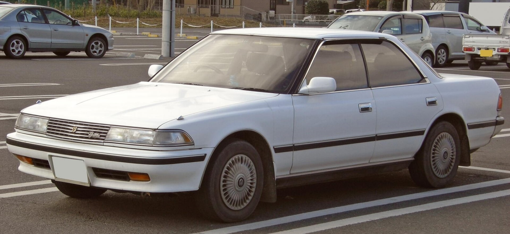
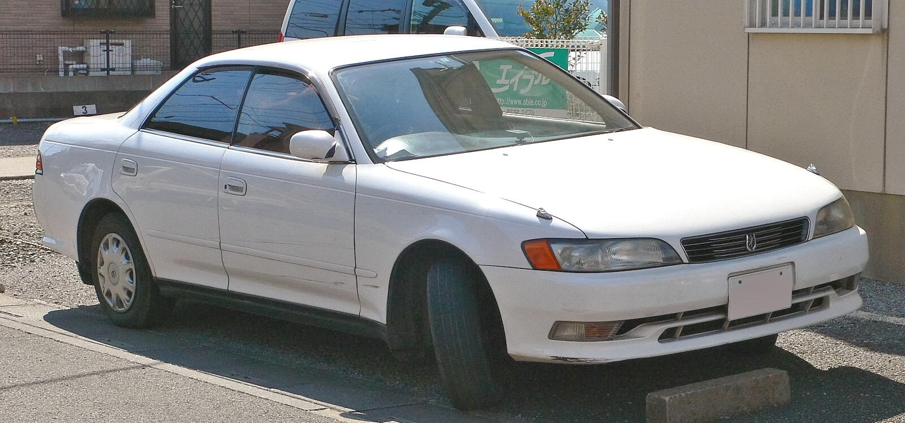
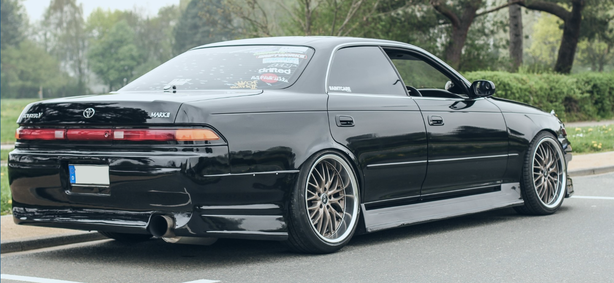

Toyota Mark II
Toyota Mark II (яп. トヨタ・マークII) — четырёхдверный спортивный среднеразмерный седан, выпускавшийся компанией Toyota с 1968 по 2004 годы. Наименование Mark II использовалось компанией Toyota на протяжении нескольких десятилетий и первоначально использовалось в составе названия Toyota Corona Mark II. Отметка II была введена, чтобы машина выделялась из основной платформы Toyota Corona. В середине 1990-х годов продажи Mark сокращались, что заставило компанию Toyota обновить линейку своих седанов. Так на базе девятого поколения появилась Toyota Verossa, при этом были сняты с производства Toyota Cresta и Toyota Chaser. Начиная с шестого поколения у Mark II появилась модификация Twin Turbo (с седьмого поколения название Tourer V), получившая наиболее мощный турбированный двигатель 1JZ-GTE объёмом 2,5 литра. В 2004 году на смену Mark II пришел Toyota Mark X.
Шестое поколение:
Седьмое поколение:
Седьмое поколение тюнинг:
